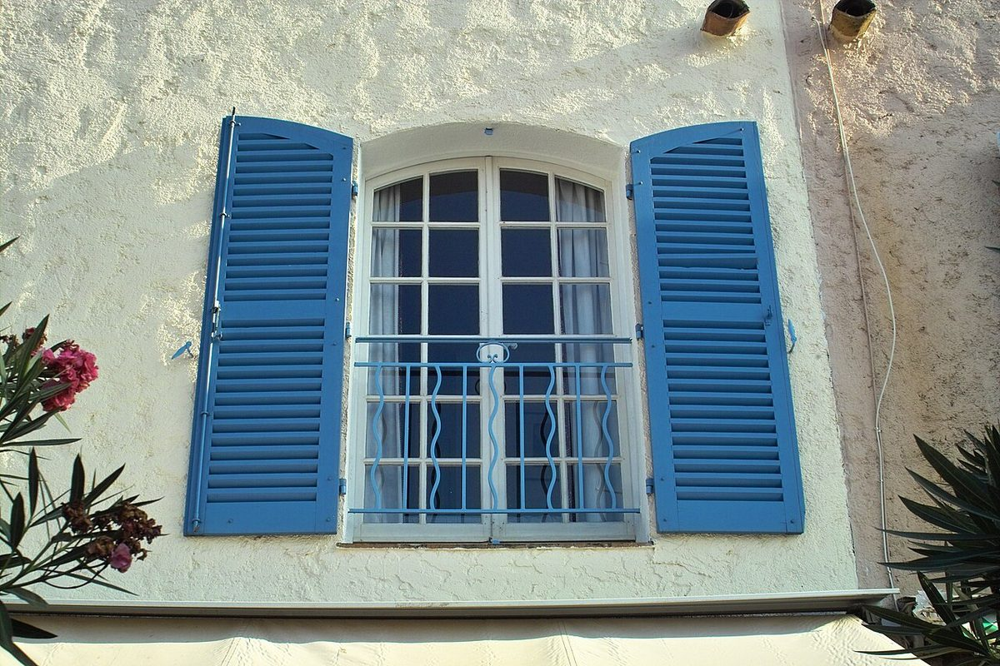

60°
こんな声があるかも
カフェという業種から自然に想像できる声を、制作側が創作したものです。
以下は制作側の創作で、実在のお客様の投稿ではありません。実際の口コミ・評価とは関係ありません。
いつか行ってみたいお店です。まずはInstagramをのぞいて、どんなお店なのか見てみたいと思っています。
コーヒーが好きなので、いつか足を運んでみたいと思っています。Instagramの投稿も見てみたいです。
カフェ巡りが好きなので、機会があれば行ってみたいです。まずはInstagramから見てみたいと思います。
